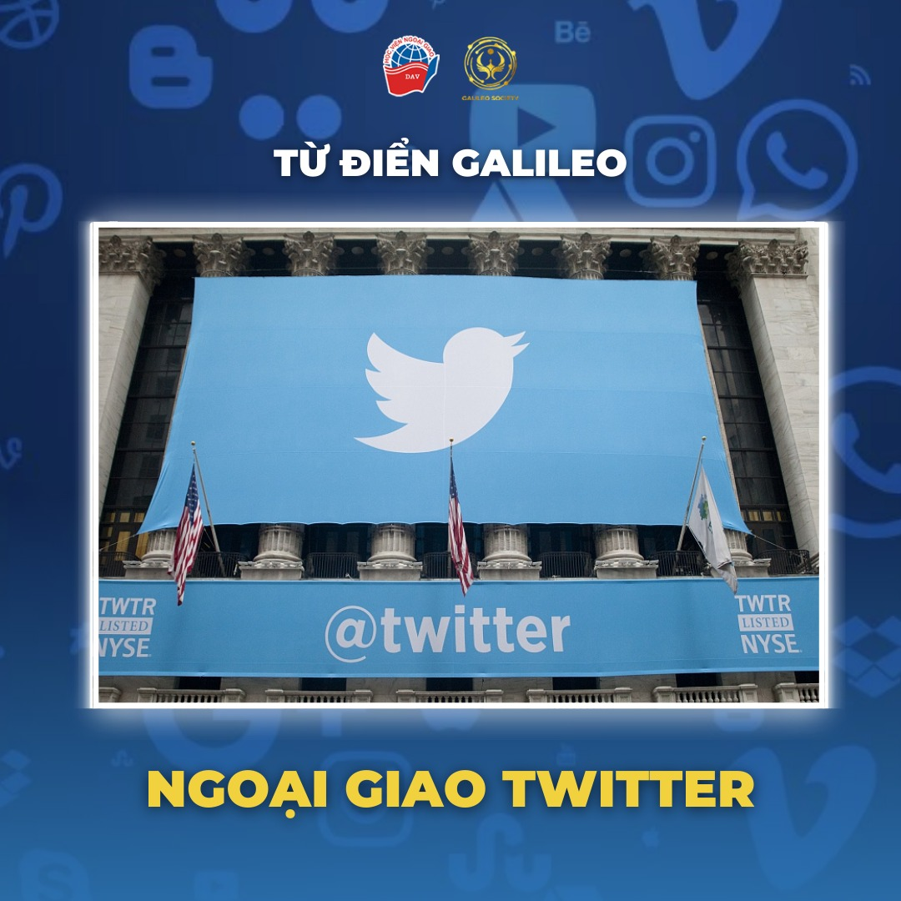

Trong thế kỷ XXI, bên cạnh hình thức đàm phán, gặp gỡ trực tiếp giữa các nước, xu hướng sử dụng công nghệ thông tin và truyền thông đang dần trở nên phổ biến trong ngành ngoại giao. Dù chỉ mới xuất hiện hơn một thập kỷ, Twitter hiện đang là một trong những công cụ của “Nghệ thuật chính trị thế kỷ XXI” được sử dụng rộng rãi nhất và còn là nền tảng hàng đầu để cập nhật tin tức và sự kiện.[1] Trong Chuyên mục Từ điển Galileo lần này, hãy cùng chúng mình tìm hiểu kỹ hơn về thuật ngữ “Ngoại giao Twitter” nhé!
1 Khái niệm và đặc điểm
“Ngoại giao Twitter” là một hình thức ngoại giao kỹ thuật số, theo đó, các chính phủ, các nhà ngoại giao và quan chức khác sử dụng nền tảng truyền thông xã hội Twitter cho mục đích ngoại giao công chúng và giao tiếp đối ngoại.[2] Cụ thể, các nhà lãnh đạo và công chúng thế giới trao đổi với nhau thông qua các dòng trạng thái (tiếng Anh: Status/Tweet) trên Twitter.[3]
Ra đời vào năm 2006 và đổi tên thành “X” vào đầu năm 2023, Twitter/X đã trở thành một nền tảng truyền thông khổng lồ với 335,7 triệu người dùng với 500 triệu dòng trạng thái được đăng tải và chia sẻ mỗi ngày trong năm 2024.[4] Nhờ sự phổ biến của nó, ngày càng nhiều tổ chức và cá nhân trong ngành ngoại giao sử dụng Twitter, đặc biệt là trong đại dịch Covid-19. Năm 2020, có 1089 tài khoản Twitter “cấp Nhà nước” đang hoạt động.[5] Twitter hiện đang là trang xã hội có nhiều tài khoản “cấp Nhà nước” nhất.[6]
Dù được phát triển dựa trên nền tảng ngoại giao truyền thống, ngoại giao Twitter vẫn có những điểm khác biệt đáng kể. Thứ nhất, một dòng trạng thái trên Twitter chỉ chứa tối đa 280 ký tự, ngắn hơn so với các bài diễn ngôn hay những thông cáo báo chí thông thường; từ đó, giúp cho công luận dễ dàng theo dõi thông tin và sự kiện. Thứ hai, các tài khoản Twitter thường là các tài khoản của cá nhân của chính trị gia, khiến cho các phát ngôn thường mang tính cá nhân cao và có ít giá trị pháp lý. Thứ ba, Twitter tạo điều kiện cho dòng chảy thông tin được truyền tải thuận tiện và nhanh chóng. Việc đăng tải một dòng trạng thái lên Twitter chỉ tốn từ vài giây đến vài phút, cho phép các chính phủ có thể nhanh chóng phản hồi khi cần thiết, cũng như tạo cơ hội cho người dân tham gia vào các cuộc thảo luận trực tiếp.[7]
2 Nội hàm của “Ngoại giao Twitter”
Ngoại giao Twitter bao gồm 2 hình thức: ngoại giao công chúng và ngoại giao giữa các chính phủ. Về ngoại giao công chúng, thứ nhất, Twitter là một mạng xã hội với hàng trăm triệu người dùng. Nhờ đó, Chính phủ và lãnh đạo của các quốc gia có thể thông báo về các hoạt động chính trị - ngoại giao hàng ngày hoặc các chính sách mới, giúp công dân có thể cập nhật tin tức nhanh chóng.[8] Thứ hai, tính ngắn gọn và nhanh chóng của Twitter cũng tạo không gian cho công dân trao đổi trực tiếp với các nhà lãnh đạo. Bằng cách “@” tên người dùng, mọi người dân đều có thể hiện quan điểm tới các quan chức chính phủ, bất kể địa vị hay khoảng cách.[9]
Về ngoại giao giữa các chính phủ, các chính phủ và các nhà ngoại giao có thể thiết lập “mối quan hệ Twitter” bằng cách theo dõi hay tương tác lẫn nhau. Ngoài ra, chính phủ có thể đăng tải những nội dung tích cực như gửi lời chúc mừng, cảm ơn, ca ngợi hay bày tỏ sự mong muốn, hoặc những lời chỉ trích, chế giễu hay cáo buộc đối với những hành động hay chính sách đến từ quốc gia đối lập.
Do đó, về một mặt, ngoại giao Twitter góp phần duy trì và cải thiện quan hệ giữa các quốc gia, tạo tiền đề cho các cuộc đàm phán, gặp mặt chính thức. Chẳng hạn như trước thềm Hội nghị Thượng đỉnh G20 tại Nhật Bản vào tháng 6/2019, Tổng thống Hoa Kỳ Donald Trump đã có bài đăng trên tài khoản Twitter của mình với nội dung: “Tôi mong muốn được trao đổi với Thủ tướng Modi (Thủ tướng Ấn Độ), Ấn Độ đã áp mức thuế rất cao với Mỹ trong nhiều năm qua, gần đây mức thuế này còn cao hơn nữa. Điều này là không thể chấp nhận và cần phải thu hồi thuế”.[10] Bài đăng thể hiện quan điểm của Nhà Trắng trong gia tăng chiều sâu quan hệ với New Delhi, cũng như mong muốn đàm phán giải quyết vấn đề.
Mặt khác, các bài đăng mang tính chất khiêu khích của các nhà ngoại giao trên Twitter cũng có thể làm gia tăng căng thẳng trong quan hệ giữa các nước. Thay vì hàn gắn mối quan hệ, thu hẹp khoảng cách và xây dựng lòng tin, sự tương tác không thân thiện giữa các chính phủ trên Twitter có thể làm gia tăng sự nghi kỵ và leo thang xung đột. Ví dụ điển hình là bài đăng trên Twitter vào tháng 3/2020 về thuyết âm mưu rằng quân đội Mỹ đã đưa virus Covid-19 đến Vũ Hán (Trung Quốc) sau đó đổ lỗi cho Trung Quốc của ông Triệu Lập Kiên - Phát ngôn viên Bộ Ngoại giao Trung Quốc khi đó.[11] Sự kiện này không chỉ làm gia tăng căng thẳng giữa Mỹ và Trung Quốc mà còn khiến cộng đồng quốc tế chia rẽ trong việc đánh giá trách nhiệm và nguồn gốc của đại dịch.
Có thể thấy sự phát triển mạnh mẽ và nhanh chóng của Ngoại giao Twitter là không thể phủ nhận khi tính đến năm 2020, 98% các quốc gia thành viên Liên Hợp Quốc có sự hiện diện chính thức trên nền tảng này. [12] Ngoại giao Twitter đã tác động đến tương tác ngoại giao theo cả chiều dọc (giao tiếp giữa nhà nước và nhân dân, cả trong và ngoài nước) và chiều ngang (giữa các nhà nước với nhau). Những tác động tích cực có thể kể đến như tăng cường ngoại giao công chúng, hay thúc đẩy các quan hệ song phương, đa phương giữa các nước. Tuy vậy, những thông báo, những dòng tweet mang tính khiêu khích hay gây tranh cãi của các chính khách cũng có thể dẫn đến sự rạn nứt niềm tin trong công chúng và sự rạn nứt trong quan hệ giữa các quốc gia. Chính vì vậy, việc khai thác và sử dụng hiệu quả Ngoại giao Twitter - một trong những nghệ thuật chính trị thế kỉ XXI chắc chắn đòi hỏi sự thận trọng và nỗ lực từ nhiều phía.